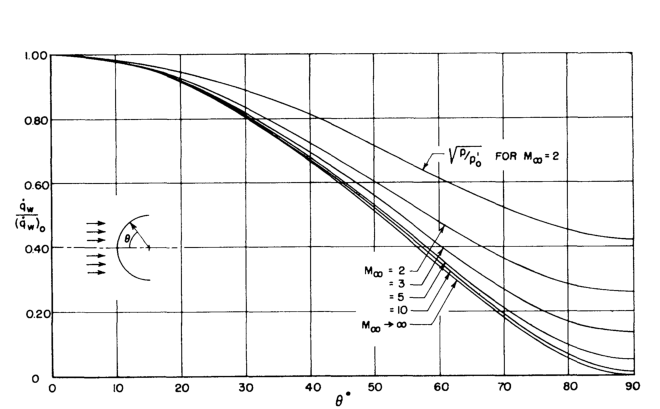
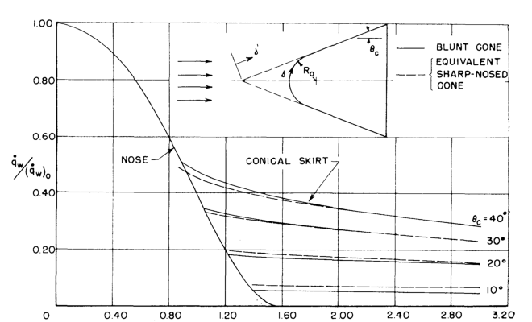

01中文摘要
研究高超声速飞行（高滞止温度）下钝头体层流传热的两个极限：(a) 热力学平衡，化学反应率远快于跨流线扩散；(b) 扩散控制，边界层内复合率远慢于扩散。两种情形下壁面附近密度远高于边界层外缘，速度与滞止焓型线对压力梯度不敏感；平衡时无量纲壁面焓梯度可用零压力梯度经典值，表面热流直接由表面压力分布得到。方法用于半球和球冠钝锥；扩散控制时扩散方程与低速能量方程同形，仅 Pr 换为 Sc，扩散/传导热流比上限为 (Pr/Sc)^(2/3)≈1.30。
02阅读说明
1956年JET PROPULSION理论论文，共12页PDF：主体印刷页259–269，另含p.274的讨论/附文；抓图清单中p.11的Table 1/2属于附文“Effect of Chemical Reactions…”，不是Lees主体数据，故未选为figures。bundle OCR公式有个别乱码，已用原PDF第3–8页（印刷页261–266）核对式[9]–[19]；Fig.2/Fig.3位于印刷页265（PDF第7页）。 文章类型：期刊
03一句话核心与三句话摘要
用相似解把高超声速钝头体层流热流写成驻点值乘压力分布函数，并给出扩散控制极限。
- 论文研究高超声速钝头体层流边界层传热的两个极限：热化学平衡（反应极快）与扩散控制（体积复合极慢）。 原文明确
- 在强冷却pw/pe≫1下，表面无量纲焓梯度近似取零压梯度值0.47Pr^{1/3}，热流分布可由压力分布显式积分得到。 原文明确
- 按动力论估计原子-分子扩散系数后，扩散与传导热流最大比约1.30；作者强调该简化结果仍需实验检验。 原文明确
04核心内容清单
| 要点 | 类型 | 重要性 | 原文依据 | 属性 |
|---|---|---|---|---|
| 论文把钝头体层流传热分为热化学平衡与扩散控制两个极限，并认为实际情形介于二者之间。 | 研究框架 | A | 印刷页259–260，引言 | 原文明确 |
| 强冷却使pw/pe≈10–20，壁面密度远高于外缘，速度与总焓剖面对压力梯度不敏感。 | 关键物理 | A | 印刷页260，2.1节 | 原文明确 |
| 采用二元原子-分子混合、单一D12，忽略NO及Ma∞<约25时的离子/电子。 | 简化假设 | A | 印刷页260，2.1节 | 原文明确 |
| 用Levy变换与轴对称Mangler变换把边界层方程化为相似ODE[9]–[10]，边界条件为f(0)=f'(0)=0、f'→1，g(0)=gw或g'(0)=0、g→1。 | 理论方法 | A | 印刷页262，2.2节 | 原文明确 |
| 零压梯度下g'(0)≈0.47Pr^{1/3}，在pw/pe≫1时可近似用于整个钝头体表面。 | 核心结果 | A | 印刷页263–264，2.2–2.3节 | 原文明确 |
| 热流分布写成qw≈0.50Pr^{-2/3}√((ρeμe)0)√(ue)hseF(s)，F(s)含压力、速度与半径的积分。 | 核心公式 | A | 印刷页264，式[11]–[12] | 原文明确 |
| 驻点热流由式[12a]/[13]给出，含修正牛顿压力分布的G(M∞;γ,γw)。 | 核心公式 | A | 印刷页264，式[12a]–[13] | 原文明确 |
| 半球分布由式[14]/[15]与D(θ)给出；M∞>5时高超声速分布几乎覆盖整个半球，M∞=2时比Stine–Wanlass低12–15%。 | 结果 | A | 印刷页265，3节，图2 | 原文明确 |
| 钝锥用A(θc)、B(θc)表描述；θc=30°/40°时锥裙分布与等效尖锥几乎相同，细长锥在接合部后数个鼻半径内低于尖锥。 | 结果 | A | 印刷页265–266，3节，图3 | 原文明确 |
| 扩散控制极限把组分方程化为Schmidt数控制的同形方程，最大扩散/传导热流比≈(ρD12Cp/k)w^{2/3}（式[19]）。 | 理论结果 | A | 印刷页266，4.1节，式[16]–[19] | 原文明确 |
| 按Lennard-Jones动力论取σ12=3.3 Å、ε12/k=84 K，得Sc≈0.49、Pr≈0.71、(ρD12Cp/k)w≈1.45，最大比≈1.30。 | 定量估计 | A | 印刷页267–268，4.2节，式[20]–[21] | 原文明确 |
| 结论受二元混合、单一D12、Le=1、Pr常数、C=1、局部相似、修正牛顿与强冷却等假设限制，作者明确要求更多实验检验。 | 局限 | A | 印刷页260、268 | 原文明确 |
05引言：研究问题与领域缺口
研究问题：高超声速飞行时钝头体前缘驻点区发生强脱体激波，动能转化为热与化学能，边界层通常为层流，传热机制可能远离常规分子导热。作者要给出两类极限的简单解析解：(a)完全热化学平衡，反应速率远快于对流/跨流线扩散；(b)扩散控制，体积复合速率远慢于跨流线扩散。已有Cohen–Reshotko、Lai、Hayes等积分/相似方法，但需要能显式给出表面热流分布、便于与实验比较的结果；实际物理情形预计介于两极限之间（印刷页259–260）。
06流动条件与几何构型
| 项目 | 数值/描述 | 依据 | 备注 |
|---|---|---|---|
| 来流/飞行条件 | 高超声速飞行；讨论范围以Ma∞<约25为忽略离子/电子的界限 | 印刷页260，2.1节 | |
| 壁面热条件 | 强冷却，Tw/Te≪1；pw/pe≈10–20 | 印刷页260，2.1节 | |
| 气体模型 | 二元原子-分子混合；单一扩散系数D12；NO贡献忽略 | 印刷页260，2.1节 | |
| 极限(a) | 完全热化学平衡：反应速率远快于对流与跨流线扩散 | 印刷页259–260，引言 | |
| 极限(b) | 扩散控制：体积复合速率远慢于跨流线扩散，近壁温度较低 | 印刷页259–260，引言 | |
| 几何 | 不偏航回转体或平面体；半球；球冠钝锥，θc=10°,20°,30°,40° | 印刷页265–266，3节 | |
| 边界层 | 层流、薄边界层，δ/r0≪1，激波与边界层分明；Re_R0足够高（约>10^4量级） | 印刷页261，脚注9 | |
| 物性/数值假设 | Lewis数=1；Pr≈0.71；相似计算中常取Pr=1、C=1；γ∞=1.40；修正牛顿压力分布 | 印刷页262–266 | |
| 表面催化 | 扩散控制极限中取壁面原子浓度为零（完全催化）计算扩散热流 | 印刷页261、266 |
07核心现象与关键参数
| 参数 | 定义 | 数值 | 关系/说明 | 依据 |
|---|---|---|---|---|
| Ma∞ | 来流Mach数 | Fig.2曲线取2、3、5、10、∞；忽略离子的适用范围约<25 | hse≈u∞²/2（高超声速飞行） | 印刷页260、265，图2 |
| Re_R0 | 以鼻尖半径R0为参考的Reynolds数 | 要求边界层与激波分明，约>10^4量级 | 决定δ/r0与相似解适用性 | 印刷页261，脚注9 |
| hse | 边界层外缘总焓 | 飞行时≈u∞²/2；风洞为储室总焓 | 热流的能量尺度 | 印刷页264 |
| Tw/Te | 壁温与外缘温度比 | ≪1（强冷却） | 决定pw/pe与g(0)=gw | 印刷页260 |
| pw/pe | 壁面与外缘密度比 | 约10–20 | 强冷却与分子量变化共同造成 | 印刷页260 |
| β | 速度梯度参数(2s/ue)(due/ds) | 驻点1/2（回转体）、1（圆柱）；pw/pe≪1时最大有效值1/8、1/4 | 控制压力梯度对速度剖面的影响 | 印刷页263 |
| C | Chapman–Rubesin函数ρμ/(ρeμe) | 相似计算中取1；高焓下μρ≈μeρe | 进入动量/能量方程[9]–[10] | 印刷页262–263 |
| Pr | Prandtl数Cpμ/k | 干空气约0.71；相似计算常取1 | 能量方程[10]与热流式[11] | 印刷页264、268 |
| Le | Lewis数ρD12Cp/k | 取1以简化能量方程 | 使能量方程与组分方程同形 | 印刷页262 |
| Sc | Schmidt数μ/(ρD12) | ≈0.543/A*(T*)；252–3360 K为0.495–0.482 | 扩散控制极限中替代Pr | 印刷页267–268 |
| D12 | 原子-分子二元扩散系数 | 由式[20]计算；取σ12=3.3 Å、ε12/k=84 K | Lennard-Jones动力论 | 印刷页267，式[20] |
| (ρD12Cp/k)w | 扩散与传导热流之比的控制参数 | ≈1.45 | 最大扩散/传导≈(1.45)^{2/3}≈1.30 | 印刷页268 |
08方法与数据
把边界层气体简化为原子-分子二元混合，用单一扩散系数D12；忽略NO贡献，并在Ma∞<约25时忽略离子/电子。写出连续、动量、能量、组分与状态方程[1]–[5]；用Levy变换与轴对称Mangler变换引入S、η与流函数ψ，化为相似常微分方程[9]–[10]。在Pr=1、C=1时进一步化为f'''+ff''+β[g−(f')²]=0、g''+fg'=0，并引用Cohen–Reshotko数值解。强冷却pw/pe≫1时忽略压力梯度对速度/总焓剖面的直接影响；用修正牛顿压力分布p/p0'=sin²θb+(p∞/p0')cos²θb计算半球与钝锥。扩散控制极限把组分方程化为与能量方程同形、以Schmidt数替代Prandtl数的方程；用Lennard-Jones动力论估算D12、Sc、Pr及(ρD12Cp/k)w。
| 项目 | 内容 | 依据 | 备注 |
|---|---|---|---|
| 气体模型 | 二元原子-分子混合，单一D12；忽略NO，Ma∞<约25时忽略离子/电子 | 印刷页260，2.1节 | |
| 控制方程 | 连续[1]、动量[2]、能量[3]、组分[4]、状态[5] | 印刷页261，2.1节 | |
| 坐标变换 | Levy变换[6]–[7]加轴对称Mangler变换；流函数[8a]/[8b] | 印刷页262，2.2节 | |
| 相似解 | ψ=(2S)^{1/2}f(η)、u/ue=f'、hs/hse=g，得动量[9]与能量[10] | 印刷页262，2.2节 | |
| 常物性简化 | Pr=1、C=1时化为f'''+ff''+β[g−(f')²]=0、g''+fg'=0；引用Cohen–Reshotko数值解 | 印刷页263 | |
| 压力分布 | 修正牛顿p/p0'=sin²θb+(p∞/p0')cos²θb；半球与钝锥几何代入式[14] | 印刷页264–265 | |
| 扩散极限 | 组分方程[16]化为Zi方程，Sc替代Pr；扩散热流式[17]与比值式[19] | 印刷页266，4.1节 | |
| 动力论物性 | Lennard-Jones势，D12式[20]、黏性式[21]；推荐σ1=0.80 Å、σ12=3.3 Å、σ2=3.69 Å、ε1/k=1.14×10^5 K、ε12/k=84 K | 印刷页267–268，4.2节 | |
| 对比验证 | 与Squire/Sibulkin驻点解、Cohen–Reshotko相似解、Stine–Wanlass、Korobkin及实验压力分布对比 | 印刷页264–265 |
09核心推导与公式
在强冷却pw/pe≫1条件下，把可压缩层流边界层用Levy/Mangler变换化为低相似解；压力梯度对速度/总焓剖面影响很小，表面焓梯度可用零压梯度值0.47Pr^{1/3}；于是热流分布由驻点值与外部压力分布积分显式给出。扩散控制极限则把组分方程化为Schmidt数控制的同形方程，得到扩散/传导比的上界。
关键假设
- 二元原子-分子混合，单一D12；忽略NO，Ma∞<约25时忽略离子/电子。
- 强冷却Tw/Te≪1，pw/pe≈10–20；边界层外缘等熵，压力梯度沿法向不变。
- Le=1，Pr取常数；相似计算中进一步取Pr=1、C=1。
- 局部相似：速度与总焓剖面只通过β、ue²/2hse、gw及物性比依赖于s。
- 修正牛顿压力分布，γ∞=1.40；半球/钝锥几何用θ或θc描述。
- 扩散控制极限：体积复合可忽略，壁面原子浓度取零（完全催化）。
推导过程
对定常、轴对称（k=1）或平面（k=0）钝头体，写出连续[1]、动量[2]、能量[3]、组分[4]与状态[5]方程；hs包含化学焓与动能（印刷页261）。
引入相似坐标η与S，使动量/能量方程化为常微分方程；S含ρeμeuer0^{2k}的积分，η含密度比积分（印刷页262）。
用ψ自动满足连续方程，并令ψ=(2S)^{1/2}f(η)、u/ue=f'、hs/hse=g；由此得到动量与能量相似方程（印刷页262）。
边界条件为f(0)=f'(0)=0、f'→1，g(0)=gw或g'(0)=0、g→1；当Pr=1、C=1时方程组化为经典形式，并用ρe/ρ=g+((γ−1)/2)Me²[g−(f')²]闭合（印刷页262–263）。
pw/pe≫1时压力梯度对速度剖面影响很小；对传热影响更小，因为g'(0)的变化取决于速度剖面变化在边界层上的积分。数值上g'(0)≈0.47Pr^{1/3}，与Tw、Me和压力梯度几乎无关（印刷页263）。
把g'(0)代入Fourier导热，得到qw≈0.50Pr^{-2/3}√(ρeμe)√(due/ds)hseF(s)；F(s)含p/p0'、ue/u∞、r0/R0的积分（印刷页264）。
在驻点，2S与(du_e/ds)0、R0关联；用修正牛顿压力分布可把驻点热流写成含G(M∞;γ,γw)的形式（印刷页264）。
对半球取ds=R0dθ、r0=R0sinθ，代入式[14]得式[15]与D(θ)；近驻点展开为1−(0.722/(γ∞M∞²)−0.667)θ²+…（印刷页265）。
球冠段与半球相同；锥裙取r0=sf sinθc、sf/R0=cotθc+[s/R0−(π/2−θc)]，得到A(θc)、B(θc)表达式及数值表（印刷页265–266）。
体积复合可忽略时组分方程[16]化为Zi方程，Sc=μ/(ρD12)替代Pr；扩散热流式[17]与总热流比值式[19]给出两极限间的范围（印刷页266）。
用Lennard-Jones势的D12式[20]与黏性式[21]，取σ12=3.3 Å、ε12/k=84 K，得Sc≈0.49、Pr≈0.71，故(ρD12Cp/k)w≈0.71/0.49≈1.45，最大扩散/传导比≈(1.45)^{2/3}≈1.30（印刷页267–268）。
适用边界：推导依赖二元混合、单一D12、Le=1、Pr常数、C=1、局部相似、修正牛顿压力分布与pw/pe≫1；近分离处局部相似失效；动力论碰撞参数和实验数据均有不确定性。原PDF与OCR对式[11]的系数排布略有差异，本文以式[12]及PDF印刷页264为准。
10结果：主要发现与关键证据
零压梯度下表面无量纲焓梯度g'(0)≈0.47Pr^{1/3}，在pw/pe≫1时几乎不随Tw、Me和压力梯度变化。热流写成qw≈0.50Pr^{-2/3}√((ρeμe)0)√(ue)hseF(s)（式[11]/[12]），驻点由式[12a]/[13]给出。半球分布由式[14]/[15]与D(θ)给出；近驻点qw/(qw)0≈1−(0.722/(γ∞M∞²)−0.667)θ²；M∞>5时高超声速分布几乎覆盖整个半球；M∞=2时比Stine–Wanlass低12–15%。钝锥由A(θc)、B(θc)表给出：θc=10°,20°,30°,40°时A/B=0.181/172.0、0.326/+4.2、0.443/−0.20、0.520/−0.26。扩散控制极限最大扩散/传导比≈(ρD12Cp/k)w^{2/3}；取Sc≈0.49、Pr≈0.71得(ρD12Cp/k)w≈1.45，最大比≈1.30。
| 发现 | 证据 | 证据类型 | 强度 | 位置 | 属性 |
|---|---|---|---|---|---|
| 强冷却钝头体表面无量纲焓梯度近似为0.47Pr^{1/3}，与Tw、Me和压力梯度几乎无关。 | 正文明确给出0.47Pr^{1/3}；Fig.1b的Cohen–Reshotko数值解显示β从0到2时g'(0)变化很小；式[11]取整为0.50Pr^{1/3}（印刷页263–264）。 | 核心结果 | 强 | 印刷页263–264，图1b，式[11] | 原文明确 |
| 压力梯度对传热的影响比对摩阻更小；驻点β=1/2（回转体）或1（圆柱），但有效β最大仅1/8或1/4。 | 正文指出pw/pe≪1时压力梯度项等效于β/4；Fig.1a/1b显示g'(0)随β变化远小于f''(0)（印刷页263）。 | 机制 | 强 | 印刷页263，图1a–1b | 原文明确 |
| 平衡极限下热流分布可写成驻点值乘压力分布函数F(s)。 | 式[11]/[12]给出qw≈0.50Pr^{-2/3}√((ρeμe)0)√(ue)hseF(s)，F(s)含p/p0'与几何积分（印刷页264）。 | 核心公式 | 强 | 印刷页264，式[11]–[12] | 原文明确 |
| 半球热流在M∞>5时几乎整半球接近高超声速分布；M∞=2时比Stine–Wanlass低12–15%。 | Fig.2给出qw/(qw)0随θ的分布；正文明确M∞=2的差异及M∞>5的覆盖范围（印刷页265）。 | 结果 | 强 | 印刷页265，图2 | 原文明确 |
| 钝锥锥裙在θc=30°/40°时与等效尖锥几乎相同；细长锥在接合部后数个鼻半径内低于尖锥。 | A/B数值表（10°:0.181/172.0；20°:0.326/+4.2；30°:0.443/−0.20；40°:0.520/−0.26）及Fig.3（印刷页265–266）。 | 结果 | 强 | 印刷页265–266，图3 | 原文明确 |
| 扩散控制极限的最大扩散/传导热流比为(ρD12Cp/k)w^{2/3}。 | 式[17]与式[19]；正文明确该比值衡量两极限的最大差异（印刷页266）。 | 理论结果 | 强 | 印刷页266，式[16]–[19] | 原文明确 |
| 取动力论估计后，扩散/传导最大比约为1.30。 | Sc≈0.49、Pr≈0.71，得(ρD12Cp/k)w≈1.45；1.45^{2/3}≈1.30（印刷页267–268）。 | 定量估计 | 中 | 印刷页267–268，4.2节 | 原文明确 |
| 两极限之外的实际热流预计介于平衡与扩散控制结果之间，需实验判定。 | 引言明确实际物理情形位于两极限之间；结论要求更多理论与（尤其）实验研究（印刷页260、268）。 | 适用性 | 中 | 印刷页260、268 | 原文明确 |
11机制解释与论证链
【原文明确】钝头体前缘强激波把飞行动能变为热与化学能，但强冷却使壁面附近密度远高于外缘（pw/pe≈10–20），边界层很薄；压力梯度主要改变密度而不是速度剖面，故速度与总焓剖面接近零压梯度的Blasius/相似解，表面焓梯度近似常数0.47Pr^{1/3}。【AI概括】于是热流分布=驻点热流×由外部压力分布决定的几何因子，化学平衡只通过hse和物性进入；扩散控制时，原子向壁面的扩散相当于一种“组分导热”，其最大贡献由(ρD12Cp/k)w^{2/3}度量。【AI推断】两种极限给出实际有限速率化学非平衡热流的上下界，σ12=3.3 Å等动力论参数是1.30这一估计的主要不确定性来源。
12讨论：结论、贡献与局限
机制：强冷却使壁面密度远高于边界层外缘（pw/pe≈10–20），压力梯度对速度剖面的影响被大幅削弱；驻点β对回转体为1/2、圆柱为1，但pw/pe≪1时最大有效β仅1/8与1/4，传热对压力梯度更不敏感。热流分布主要由外部压力分布与驻点值决定，化学详情只在确定hse与物性时进入。局限：二元混合、单一D12、Le=1、Pr常数、C=1、局部相似、修正牛顿压力分布与强冷却假设；实验数据分散，M∞=2时与Stine–Wanlass差12–15%；近分离处局部相似失效；动力论碰撞参数仍有不确定性。
作者结论
两类极限给出钝头体层流热流的近似上下界：平衡极限下热流分布由驻点值和外部压力分布显式决定；扩散控制极限把能量方程换成Schmidt数控制的组分方程，最大扩散/传导比约1.30。半球与钝锥公式可直接计算分布，但需要实验检验。
局限与未解决问题
二元混合、单一D12、忽略NO/离子（Ma∞<约25）、Le=1、Pr常数、C=1、局部相似、修正牛顿压力分布、强冷却pw/pe≫1；近分离或强逆压梯度处局部相似失效；动力论碰撞参数与实验数据均有不确定性；表面催化/有限速率化学未真正求解。
13对高速流动与工程的意义
给出高超声速钝头体驻点与表面热流的经典显式公式，提供化学平衡与扩散控制两种界限，便于工程估算、实验设计与后续非平衡计算比较。
14核心图件


15可引用原文素材
| 原文短句 | 可支持的观点 | 位置 | 使用建议 |
|---|---|---|---|
| “two limiting cases of laminar heat transfer over blunt-nosed bodies at hypersonic flight speeds” | 全文以两极限组织分析 | 印刷页259，摘要 | 研究框架 |
| “the gas density near the surface of a blunt-nosed body is much higher than the density just outside the boundary layer” | pw/pe≫1是简化压力梯度的物理基础 | 印刷页260，2.1节 | 关键假设 |
| “represented quite accurately by the zero pressure gradient value of 0.47 Pr^{1/3}” | 表面焓梯度的核心近似 | 印刷页263，2.2节 | 核心结果 |
| “independently of surface temperature, local Mach number Me, or pressure gradient” | 0.47Pr^{1/3}的普适性 | 印刷页263，2.2节 | 结果 |
| “is given by (pD12Cp/k)w^{2/3}” | 扩散/传导最大比的表达式 | 印刷页260，引言 | 理论结果 |
| “this ratio is found to be 1.30” | 动力论估计的定量结论 | 印刷页260，引言 | 定量结果 |
| “clearly required before these simple results can be accepted” | 作者对实验验证的强调 | 印刷页260，引言 | 局限 |
| “the present result has the same form as the 'low-speed,' constant-property solutions” | 相似解与低速常物性解的类比 | 印刷页264，2.3节 | 方法意义 |
16最终核验
| 核验项 | 结论 |
|---|---|
| 仅基于全文 | 仅使用bundle文本、图注与抓图清单；未引入外部文献或数据。 |
| A 级要点有依据 | A级条目均对应明确方程、图2/图3、A/B数值表或正文数值；B级为跨段概括。 |
| 属性标注 | three_sentence、core_points、findings均带attr；机制段用【原文明确】【AI概括】【AI推断】标注。 |
| 覆盖范围 | 覆盖引言、控制方程、相似变换、平衡极限、驻点/半球/钝锥分布、扩散控制极限、动力论物性与讨论；p.11附表属于附文，未纳入主体数据。 |
| 无编造 | 页码、图号、公式与数值均来自bundle及原PDF第4–8页核对；无法确认处写“受限于材料”或列入open_questions。 |
需回原文确认
- 式[11]中0.50与Pr^{1/3}、Pr^{-2/3}的排布在OCR与正文间略有差异，如何与式[12]统一？
- Fig.2/Fig.3的纵坐标qw/(qw)0是否均按同一hse归一，M∞=2曲线的“frozen”标记具体指什么？
- (ρD12Cp/k)w≈1.45对σ12=3.3 Å、ε12/k=84 K的敏感度多大？若取其他碰撞参数，1.30会变多少？
- 扩散控制极限取壁面原子浓度为零（完全催化），若考虑有限催化或表面复合，最大比如何改变？
- Ma∞<2或>25时，忽略离子/电子与修正牛顿压力分布的误差有多大？
- 钝锥表中θc=20°的B(θc)=+4.2与30°/40°的负值符号差异如何解释？
- 实验数据分散度是否足以检验12–15%的M∞=2差异？
- 有限速率化学非平衡如何定量介于两极限之间？
17关联文献
依据标签、板块、构型与作者脉络自动关联，可据此追踪同一问题的前序与后续工作。
18引用格式
选择期刊风格后复制；出处保留原刊名。BibTeX 可直接用于 LaTeX。
引用格式
Lees, L. 1956 Laminar Heat Transfer Over Blunt-Nosed Bodies at Hypersonic Flight Speeds. Journal of Jet Propulsion. https://doi.org/10.2514/8.6977
PDF上传 PDF 并更新本页
本页缺少全文、摘要或图件时，可在浏览器本地补入 PDF。解析完全在本机完成，不上传网络；完成后会更新本页的 PDF 打开链接、原摘要、IMRaD 机器抽取、关键句与含图页面。复杂的公式语义与中文深度解读仍以原文和既有精读记录为准。